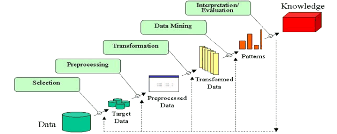
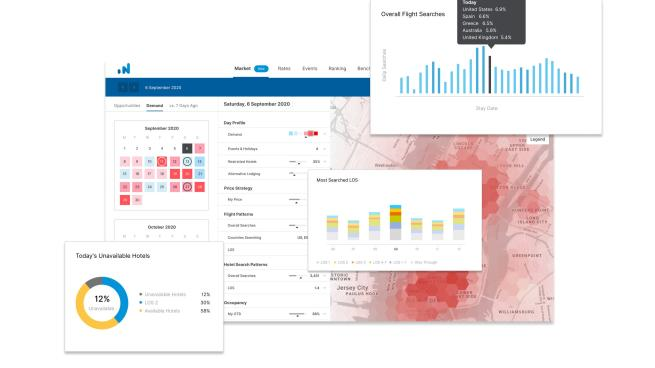

Ni Wayan Sumartini Saraswati
Desember, 2023
HOSPITALITY BUSINESS INTELLIGENCE SYSTEM
Hospitality Business Intelligence (BI) System mengacu kepada BI System yang diperuntukkan untuk industri hospitality. BI System merupakan sistem yang melakukan pengolahan (transformasi) data mentah menjadi informasi berharga untuk mendukung keputusan bisnis.
Hospitality adalah sebuah istilah yang merujuk pada hubungan antara guest/tamu dan host/pelayanan dan juga merujuk pada aktivitas/kegiatan keramahtamahan. Secara lebih sederhana istilah hospitality dalam dunia pariwisata ditujukan kepada industri perhotelan, restoran dan layanan pendukung keramahtamahan lainnya.
Bagaimana Bussiness Intelligence System dapat meningkatkan profit dan efisiensi industri hospitalitys
Berbicara mengenai dukungan BI System maka tidak bisa dipisahkan dengan istilah Business Analytics (BA). Tujuan BI dan BA adalah untuk menghasilkan rekomendasi pengambilan keputusan bagi pelaku bisnis berdasarkan proses pengolahan data. BI berfokus pada situasi saat ini dan BA berfokus untuk menentukan situasi masa depan, menggabungkan keduanya dapat meningkatkan cara organisasi mencapai solusi bisnis saat ini dan masa depan (The Difference Between Business Intelligence and Business Analytics | MSU Online, 2019). BA merupakan pelengkap dari kehadiran BI, agar bisa dimanfaatkan secara maksimal dengan interpertasi data guna memprediksi apa yang akan terjadi di masa depan berdasarkan data (Nathania, 2021).
BA adalah seperangkat disiplin dan teknologi untuk memecahkan masalah bisnis menggunakan analisis data, model statistik, dan metode kuantitatif lainnya. Kegiatan ini melibatkan eksplorasi metodis dan berulang dari data organisasi, dengan penekanan pada analisis statistik, untuk mendorong pengambilan keputusan (Lutkevich, n.d.).
Gambar berikut adalah contoh BA yang dapat dilakukan untuk industri hospitality. Berdasarkan input. Berdasarkan data historis tingkat hunian kamar, manajemen dapat memperoleh tren permintaan berdasarkan musim liburan, event maupun pengaruh dari kejadian tidak terduga lainnya seperti pembatasan kunjungan dari suatu negara.
Umpan balik dari konsumen sangat berarti untuk menggambarkan citra perusahaan. Dengan majunya media online pengolahan umpan balik konsumen dapat dilakukan dengan lebih mudah dibandingkan dengan metode konvensional menggunakan kuisioner. Umpan balik berdasarkan kategori layanan juga bermanfaat untuk menggambarkan unjuk kerja masing-masing divisi dalam perusahaan. Misal jika konsumen memberikan review baik pada pengalaman terkait kebersihan kamar maka hal ini dapat dimanfaatkan untuk rekomendasi bonus bagi bagian housekeeping, secara lebih spesifik untuk staff yang melayani saat itu. Hal ini juga berlaku sebaliknya. Sehingga kedepannya penentuan gaji staff tidak lagi ditentukan oleh hirarki jabatan namun lebih kepada kinerja berdasarkan fungsi dalam perusahaan, dimana salah satu cara untuk menggambarkan kinerja adalah dengan pengolahan data review tersebut.
Informasi berharga yang didapatkan dari bagian F&B dapat mendukung peningkatan pendapatan hotel selain dari penjualan kamar. Menu dengan permintaan tertinggi maupun menu dengan keuntungan terbaik merupakan salah satu informasi yang dapat mendukung pengelolaan bagian F&B menjadi lebih baik. Rekomendasi perubahan menu sesuai musim dapat digunakan sebagai penyegaran dan daya tarik dalam pemasaran.
Hal serupa untuk informasi mengenai jenis kamar dengan tingkat penjualan tertinggi serta penyumbang keuntungan terbesar dari penjualan berdasarkan tipe kamar, memberikan rekomendasi bagi manajemen dalam menentukan strategi pemasaran dan penentuan tarif. Penentuan tarif ini juga bersumber dari data kompetitor yang bisa didapatkan dari search engine traffic dan OTA. Melalui pengelolaan data analytics maka dapat diperoleh rekomendasi harga kamar dinamis yang berpotensi memberikan keuntungan terbesar bagi perusahaan.
Mengingat hospitality adalah sebuah industri berdasarkan pegalaman pelanggan maka pengelolaan relasi dengan konsumen merupakan hal yang sangat berperan dalam kelangsungan dari industri ini. Sangat penting untuk dapat menangkap informasi mengenai pelanggan setia dimana pelanggan ini tidak hanya memberikan pemasukan secara langsung namun lebih jauh lagi pelanggan ini dapat menjadi tenaga pemasaran tidak langsung bagi perusahaan. Informasi mengenai segmentasi konsumen menjadi sumber berharga bagi tenaga pemasaran dalam menentukan target promosi. Dari data historis dapat pula dilakukan pengolahan hingga diperoleh informasi mengenai potensi pasar dari tiap negara beserta periode musimnya. Berdasarkan tingkat hunian kamar berdasarkan musim juga perusahaan dapat menentukan waktu renovasi terbaik.

Business analytics dalam industri hospitality, sumber (Kothari & Kothari, 2017)
Sebagai inti dari proses bisnis hospitality adalah reservation system. Berikut adalah bagaimana gambaran dukungan data terhadap pengembangan intelligence reservation system.

Bagaimana data mendukung reservation system,
sumber (Understanding your data and how it can work for you - Hospitality Reservation Services, n.d.)
Secara umum pengolahan data untuk menjadi informasi berharga dalam konsep BI System dapat dikaitkan dengan proses Knowledge Discovery of Database (KDD) seperti yang dituangkan oleh gambar berikut. Dari data mengalami beberapa tahap proses sebelum menjadi knowledge antara lain preprocessing, transformation, data mining dan interpretation.

Knowledge Discovery of Database, sumber (Kothari & Kothari, 2017)
Software Bussiness Intelligence untuk Hospitality
Mengembangkan BI System ada beberapa pilihan, dapat dengan pengembangan mandiri yang menawarkan kebebasan kustomisasi namun beresiko dengan keterbatasan sumber daya pengembang atau dengan menggunakan BI system yang telah ada di pasaran. Ada beberapa software BI System untuk Hospitality yang telah dikembangkan oleh beberapa vendor. Berikut adalah beberapa software tersebut :
- OTA Insight (Revenue Insight)
- Scoreboard by Duetto
- ProfitSage by ProfitSword
- HotelIQ
- SiteMinder
Gambar berikut adalah ilustrasi dari OTA Insight. OTA Insight menekankan pada prediksi permintaan terhadap kamar berdasarkan analisis dari berbagai OTA baik dari data hotel itu sendiri maupun data pesaing.

Dashboard OTA Insight, Sumber (OTA Insight Launches Market Insight | Hospitality Technology, 2020)